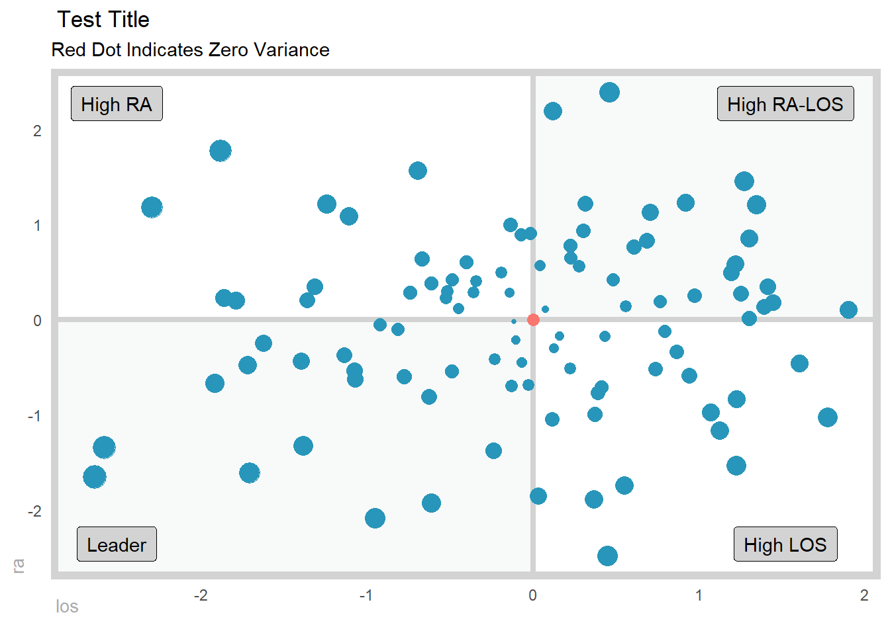
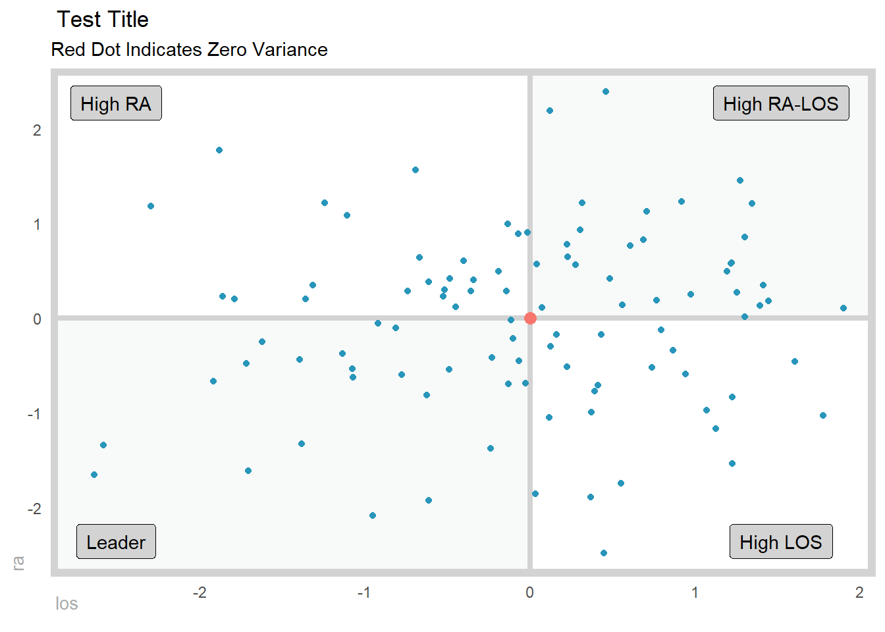

gartner_magic_chart_plt(
.data,
.x_col,
.y_col,
.point_size_col = NULL,
.y_lab,
.x_lab,
.plt_title,
.tl_lbl,
.tr_lbl,
.br_lbl,
.bl_lbl
)Introduction
The Gartner Magic Chart is a powerful tool for analyzing healthcare data and identifying trends and patterns that can inform decision making. It was developed by Dr. James Gartner in the early 2000s as a way to visualize the relationship between two key metrics, for example: Excess Length of Stay (ELOS) and Excess Readmit Rate.
In healthcare, length of stay (LOS) refers to the amount of time a patient spends in the hospital. Excess LOS is the difference between the actual LOS of a patient and the expected LOS for that patient, based on their diagnosis and other factors. Excess readmit rate is the percentage of patients who are readmitted to the hospital within a certain time period after being discharged, above and beyond what is expected based on their diagnosis and other factors.
The Gartner Magic Chart can plot excess LOS on the x-axis and excess readmit rate on the y-axis. The resulting chart is divided into four quadrants, with the top right quadrant representing high excess LOS and high excess readmit rate, the bottom left quadrant representing low excess LOS and low excess readmit rate, and the other two quadrants representing intermediate values of these metrics.
One of the key benefits of the Gartner Magic Chart is that it allows healthcare professionals to quickly and easily identify areas of concern and opportunities for improvement. For example, if a hospital has a high excess LOS and a high excess readmit rate, it may be an indication that the hospital is not effectively managing patient care and is instead relying on costly and unnecessary readmissions to address problems that could have been avoided in the first place.
The Gartner Magic Chart can also be used to identify trends over time, allowing healthcare professionals to track progress and see the impact of changes they have made to patient care processes.
If you are interested in creating a Gartner Magic Chart for your own healthcare data, the R package {healthyR} has a convenient function called gartner_magic_chart_plt() that allows you to easily create this chart from data supplied by the end user. Simply input your excess LOS and excess readmit rate data, and the function will generate the chart for you.
In summary, the Gartner Magic Chart is a valuable tool for analyzing healthcare data and identifying trends and patterns that can inform decision making. By using the gartner_magic_chart_plt() function from the {healthyR} package, you can easily create this chart for your own data and start using it to improve patient care and outcomes.
Function
Let’s take a look at the full function call for gartner_magic_chart_plt().
Now let’s take a look at the arguments to the parameters.
.data- The data set you want to plot.x_col- The x-axis for the plot.y_col- The y-axis for the plot.point_size_col- The default is NULL, if you want to size the dots by a column in the data.frame/tibble then enter the column name here..y_lab- The y-axis label.x_lab- The x-axis label.plt_title- The title of the plot.tl_lbl- The top left label.tr_lbl- The top right label.br_lbl- The bottom right label.bl_lbl- The bottom left label
Example
Let’s see the function in action.
library(dplyr)
library(healthyR)
data_tbl <- tibble(
x = rnorm(100, 0, 1),
y = rnorm(100, 0, 1),
z = abs(x) + abs(y)
)
gartner_magic_chart_plt(
.data = data_tbl,
.x_col = x,
.y_col = y,
.point_size = z,
.x_lab = "los",
.y_lab = "ra",
.plt_title = "Test Title",
.tr_lbl = "High RA-LOS",
.tl_lbl = "High RA",
.bl_lbl = "Leader",
.br_lbl = "High LOS"
)
Example two.
gartner_magic_chart_plt(
.data = data_tbl,
.x_col = x,
.y_col = y,
.point_size = NULL,
.x_lab = "los",
.y_lab = "ra",
.plt_title = "Test Title",
.tr_lbl = "High RA-LOS",
.tl_lbl = "High RA",
.bl_lbl = "Leader",
.br_lbl = "High LOS"
)